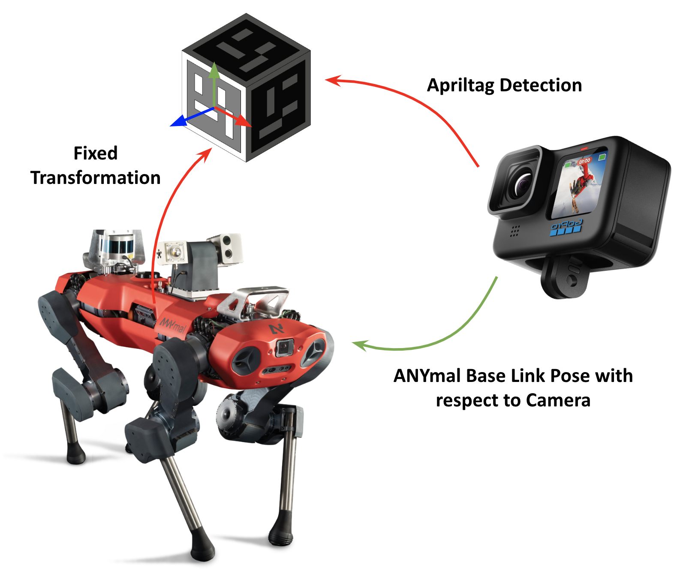
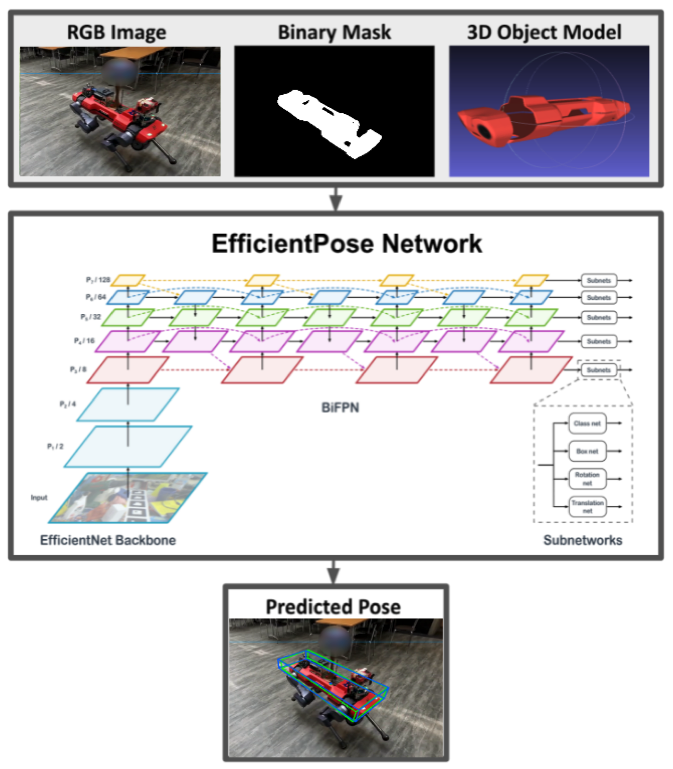

Key Idea

The way to achieve the final result comprises the following two building blocks:
For detailed information, please refer to poster and report.
Dataset Generation
The ground truth poses of the base of ANYmal are generated by detecting AprilTags attached to a mounting fixed on top of the robot by leveraging the
ROS package apriltag_ros. Then the position and quaternion is averaged between multiple faces detected
in the same frame to reduce jitter.
 |
 |
Pose Estimation
We adapt one of the state-of-the-art method for 6D pose estimation called EfficientPose on the generated dataset.

Results
 |
 |
 |
 |